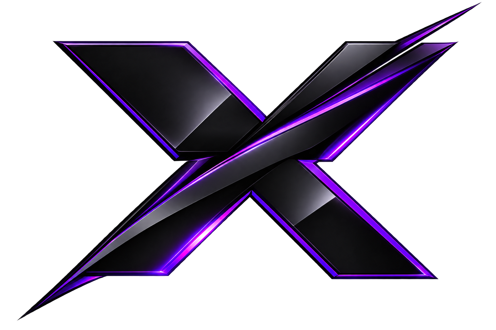
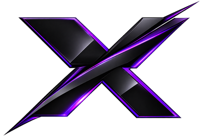

Фирменная система, утверждённая 10.11.2026: фон #08080D,
доп. фон #111018, акцент — фиолетовый неон #8B00FF,
второй акцент #B66AFF. Логотип — чёрный металлический X
с фиолетовым неоном, только символ, с настоящим прозрачным фоном.
Экраны, которые надо одобрить или поправить до сборки ISO.
Цвета берутся из branding/design-tokens.css.
Палитра
Фон #08080Dосновной фон
Доп. фон #111018панели, поля ввода
Акцент #8B00FFкнопки, галочки, выделение
Акцент 2 #B66AFFhover, ссылки, светлый неон
Текст #F5F3FAосновной текст
Вторичный #A6A0B3подписи, второстепенный текст
Границы #30283Bрамки, разделители
Логотип: чёрный металлический X с фиолетовой неоновой кромкой, прозрачный фон (PNG RGBA 1536×1024). Проверка на тёмной, белой и шахматной подложке — branding/logo-check-*.png.
1. Окно приветствия
Появляется само после входа в живую систему. Кнопка запускает установщик, галочка — показ при старте.

Добро пожаловать в XrOS!
Спасибо, что выбрали нашу систему!
XrOS 1.0 — система на базе Arch Linux с рабочим столом KDE Plasma.
Мы надеемся, что вам понравится работать с ней.
☑ Запускать при стартеЗакрыть
2. Установщик — шаг Welcome
Свой дизайн: слева шаги с фиолетовыми галочками, по центру колонка не шире 660px, кнопки 110×36. Остальные шаги — в том же стиле.

XrOS 1.0
● Welcome
Location
Keyboard
Desktop
Partitions
Users
Office Suite
Summary
Install
Finish
Добро пожаловать в XrOS
XrOS 1.0 — система на базе Arch Linux
Программа установки проведёт вас через несколько шагов:
выбор места и раскладки, рабочий стол, разметка диска,
создание пользователя и установка системы с загрузчиком GRUB.
Язык:
3. Меню загрузки GRUB
Фон — тёмные волны XrOS, центр затемнён под меню. Выбранный пункт подсвечен акцентом #8B00FF, внизу — полоса таймера автозагрузки (10 с).
XrOS 1.0
XrOS 1.0 (x86_64, UEFI)
XrOS 1.0 — с экранным диктором
Настройки UEFI
Выключить компьютер
Перезагрузить компьютер
Автозагрузка через 10 с
XrOS — на базе Arch Linux
4. Экран завершения — шаг Finish
Тот же стиль: фиолетовый кружок с белой галочкой, чекбокс «Перезагрузить компьютер сейчас» включён по умолчанию, кнопка «Завершить». Живой вид будет на скриншоте QEMU на этапе тестирования.
XrOS 1.0
✓ Welcome
✓ Location
✓ Keyboard
✓ Desktop
✓ Partitions
✓ Users
✓ Office Suite
✓ Summary
✓ Install
● Finish
✓
XrOS успешно установлена
Установка завершена. Теперь можно перезагрузить компьютер
и войти в установленную систему.
5. Обои рабочего стола
Чёрные, фиолетовые волны-ленты, по центру X, без надписи «XrOS» (надпись убрана инпейнтингом при генерации, исходник wallpaper-real.png не тронут). 1920×1080, апскейл из исходника 1672×941 без кропа.